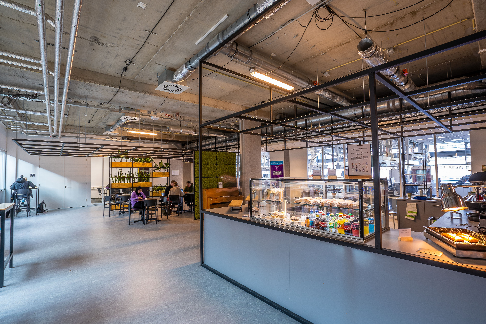

Your first years is busy; New classes, New friends, and long days on Campus. It is easy to skip meals or spend your whole allowance on milk tea. Eating regularly Simple meals help you focus in class, and you do not need a big budget to do it.
You have more options than you think.here are usual go-to spots:
A Little planning on your sunday saves you from being broke by thursday:
Always bring a refilable water bottle.water station on campus are free,and you will save a lot compared to buying bottle every day.

Photo by:Mike van Schoonderwalt
Home Enrollment Guide